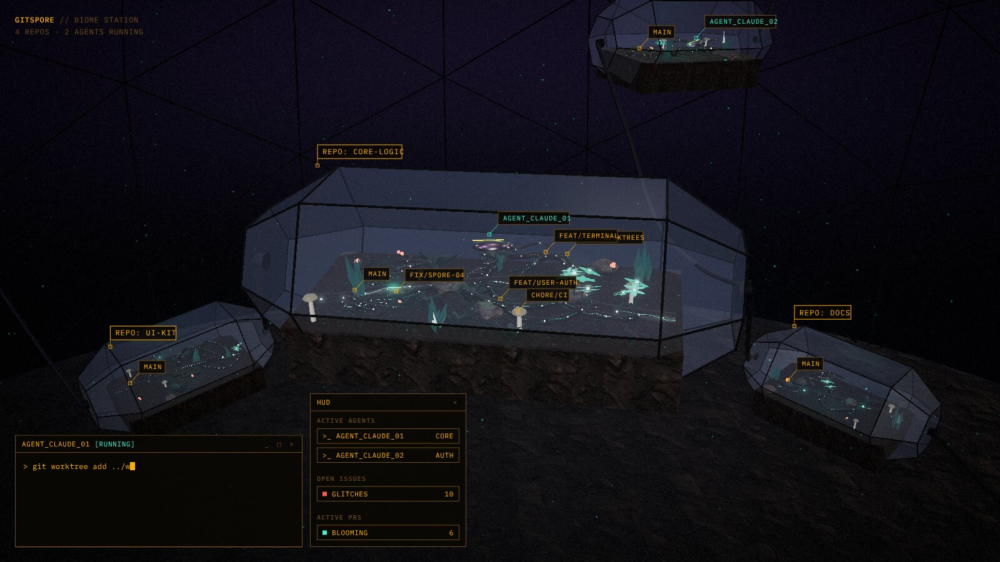
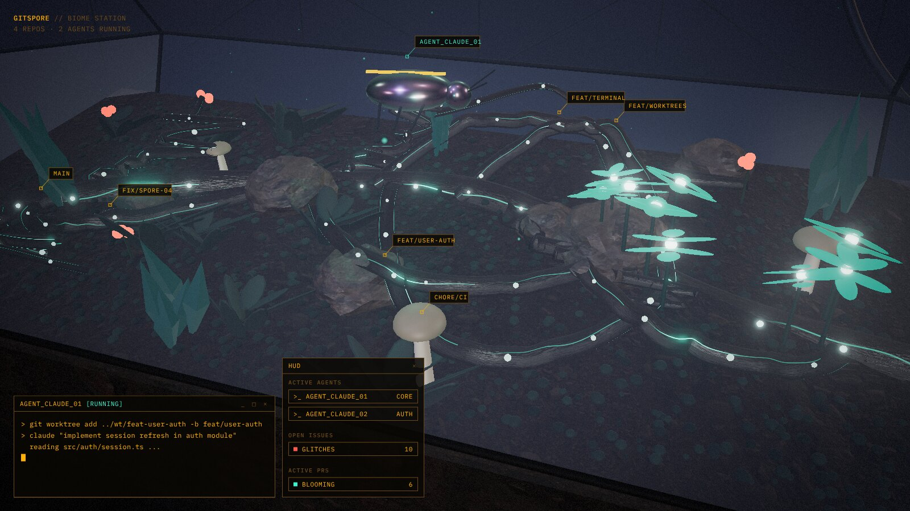
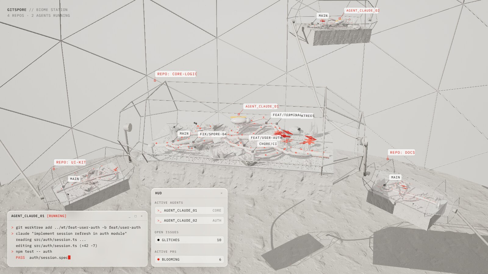
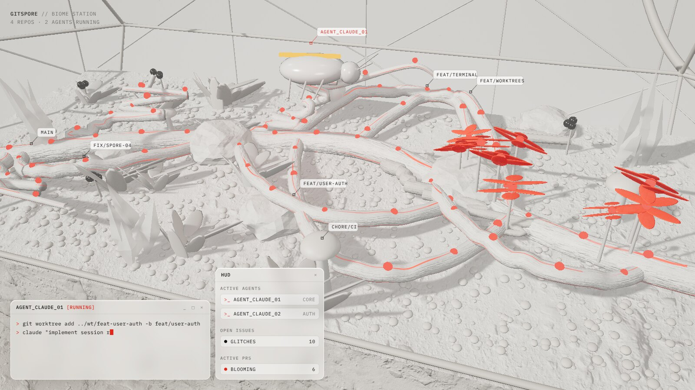
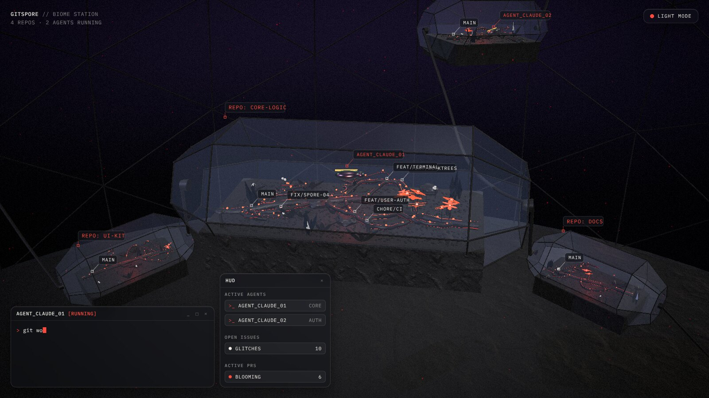
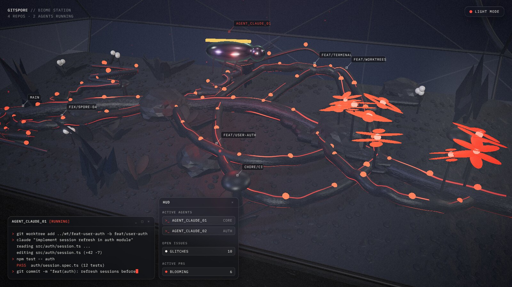
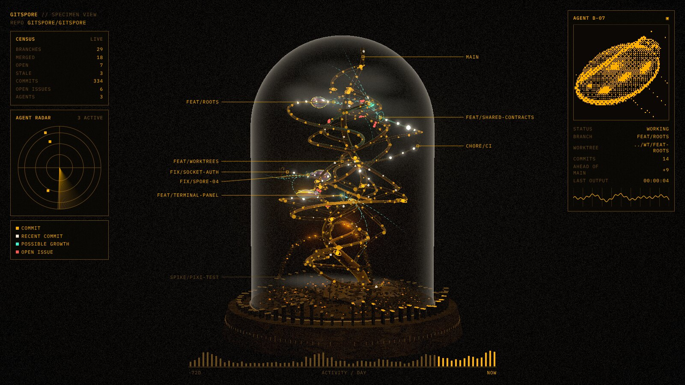
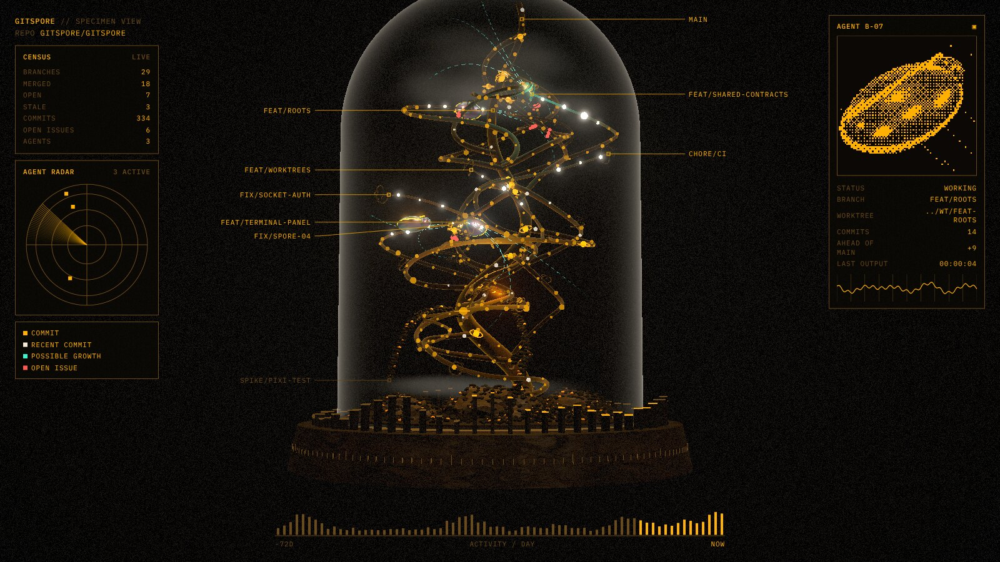

<title>gitspore Visual Proposals</title>
<link rel="preconnect" href="https://fonts.googleapis.com">
<link rel="preconnect" href="https://fonts.gstatic.com" crossorigin>
<link href="https://fonts.googleapis.com/css2?family=IBM+Plex+Mono:wght@400;500&family=IBM+Plex+Sans+Condensed:wght@500;600&family=IBM+Plex+Sans:wght@400;500&display=swap" rel="stylesheet">
<style>
  /* Layout: a specimen catalogue. One plate per proposal: renders, tokens, measured shares, live samples. Single column, wide tables scroll. */
  :root {
    --bg: #f2f1ee; --surface: #fbfaf8; --fg: #1c1b19; --muted: #6c6862; --line: #dcd9d3; --accent: #a8461b;
    --font-display: "IBM Plex Sans Condensed", "Arial Narrow", system-ui, sans-serif;
    --font-body: "IBM Plex Sans", system-ui, -apple-system, "Segoe UI", sans-serif;
    --font-mono: "IBM Plex Mono", ui-monospace, "SFMono-Regular", Menlo, monospace;
  }
  @media (prefers-color-scheme: dark) {
    :root:not([data-theme="light"]) { --bg: #131315; --surface: #1b1b1e; --fg: #ecebe7; --muted: #9b978f; --line: #2d2c30; --accent: #e58a5c; color-scheme: dark; }
  }
  :root[data-theme="dark"] { --bg: #131315; --surface: #1b1b1e; --fg: #ecebe7; --muted: #9b978f; --line: #2d2c30; --accent: #e58a5c; color-scheme: dark; }

  * { box-sizing: border-box; }
  body { background: var(--bg); color: var(--fg); font-family: var(--font-body); font-size: 15px; line-height: 1.55; }
  .page { max-width: 1120px; margin: 0 auto; padding-inline: 20px; padding-block: 40px 80px; display: grid; gap: 64px; }
  h1, h2, h3 { font-family: var(--font-display); font-weight: 600; line-height: 1.1; text-wrap: balance; margin: 0; }
  h1 { font-size: clamp(32px, 5vw, 48px); letter-spacing: -.01em; }
  h2 { font-size: clamp(26px, 3.6vw, 34px); }
  h3 { font-size: 13px; font-family: var(--font-mono); font-weight: 500; text-transform: uppercase; letter-spacing: .12em; color: var(--muted); }
  p { margin: 0; max-width: 68ch; }
  code, .mono { font-family: var(--font-mono); font-size: .88em; }
  a { color: var(--accent); }
  a:focus-visible, button:focus-visible { outline: 2px solid var(--accent); outline-offset: 2px; }

  header.intro { display: grid; gap: 16px; }
  .eyebrow { font-family: var(--font-mono); font-size: 12px; letter-spacing: .12em; text-transform: uppercase; color: var(--muted); }
  .lead { font-size: 17px; color: var(--fg); }
  nav.jump { display: flex; flex-wrap: wrap; gap: 8px; margin-top: 8px; }
  nav.jump a { font-family: var(--font-mono); font-size: 13px; text-decoration: none; color: var(--fg); border: 1px solid var(--line); background: var(--surface); padding: 6px 12px; border-radius: 999px; }
  nav.jump a:hover { border-color: var(--accent); }

  .plate { display: grid; gap: 28px; border-top: 2px solid var(--fg); padding-top: 20px; }
  .plate-head { display: flex; flex-wrap: wrap; justify-content: space-between; gap: 12px 24px; align-items: baseline; }
  .plate-head .id { font-family: var(--font-mono); font-size: 13px; color: var(--accent); letter-spacing: .04em; }
  .plate-head .status { font-family: var(--font-mono); font-size: 11px; text-transform: uppercase; letter-spacing: .12em; color: var(--muted); border: 1px solid var(--line); padding: 3px 8px; border-radius: 4px; }
  .plate-title { display: grid; gap: 6px; min-width: 0; }

  .renders { display: grid; grid-template-columns: 1.6fr 1fr; gap: 12px; }
  .renders figure { margin: 0; display: grid; gap: 6px; min-width: 0; }
  .renders img { width: 100%; height: 100%; aspect-ratio: 16 / 9; object-fit: cover; display: block; border-radius: 6px; background: var(--line); }
  figcaption { font-family: var(--font-mono); font-size: 11.5px; color: var(--muted); }

  .cols { display: grid; grid-template-columns: minmax(0, 1.25fr) minmax(0, 1fr); gap: 32px; align-items: start; }
  .block { display: grid; gap: 12px; min-width: 0; }

  .table-wrap { overflow-x: auto; }
  table { border-collapse: collapse; width: 100%; font-size: 13.5px; }
  th, td { text-align: left; padding: 7px 10px 7px 0; border-bottom: 1px solid var(--line); vertical-align: top; }
  th { font-family: var(--font-mono); font-size: 11px; font-weight: 500; text-transform: uppercase; letter-spacing: .1em; color: var(--muted); }
  td.hex { font-family: var(--font-mono); font-size: 12.5px; white-space: nowrap; }
  .sw { display: inline-block; width: 22px; height: 22px; border-radius: 4px; vertical-align: middle; box-shadow: inset 0 0 0 1px rgba(127, 127, 127, .35); }
  .swcell { width: 34px; }

  .bars { display: grid; gap: 14px; }
  .bargroup { display: grid; gap: 6px; }
  .bargroup .cap { font-family: var(--font-mono); font-size: 11px; color: var(--muted); display: flex; justify-content: space-between; gap: 8px; }
  .stack { display: flex; height: 18px; border-radius: 3px; overflow: hidden; box-shadow: inset 0 0 0 1px rgba(127, 127, 127, .3); }
  .stack span { display: block; height: 100%; }
  .acc { display: grid; grid-template-columns: 74px 1fr 52px; gap: 8px; align-items: center; font-family: var(--font-mono); font-size: 11.5px; }
  .acc .track { height: 8px; background: var(--line); border-radius: 2px; overflow: hidden; }
  .acc .fill { height: 100%; border-radius: 2px; }
  .acc .val { text-align: right; font-variant-numeric: tabular-nums; }
  .note { font-size: 13px; color: var(--muted); }

  .samples { display: grid; grid-template-columns: repeat(auto-fit, minmax(300px, 1fr)); gap: 12px; }
  .sample { background: var(--s-bg); color: var(--s-ink); border-radius: 8px; padding: 16px; display: grid; gap: 14px; min-width: 0; font-family: var(--font-mono); font-size: 12px; }
  .sample .stitle { font-size: 10.5px; letter-spacing: .14em; text-transform: uppercase; color: var(--s-dim); }
  .sample svg { width: 100%; height: auto; display: block; }
  .term { background: var(--s-panel); border: 1px solid var(--s-border); border-radius: var(--s-radius); overflow: hidden; }
  .term .bar { display: flex; justify-content: space-between; padding: 6px 10px; border-bottom: 1px solid var(--s-border); text-transform: uppercase; font-size: 10.5px; letter-spacing: .06em; }
  .term pre { margin: 0; padding: 10px; font: inherit; line-height: 1.6; white-space: pre-wrap; word-break: break-word; }
  .hl { color: var(--s-hl); }
  .chips { display: flex; flex-wrap: wrap; gap: 8px; }
  .tag { border: 1px solid var(--s-border); background: var(--s-panel); border-radius: calc(var(--s-radius) / 2); padding: 4px 8px; font-size: 10.5px; letter-spacing: .06em; text-transform: uppercase; }

  dl.post { display: grid; grid-template-columns: max-content 1fr; gap: 6px 16px; margin: 0; font-size: 13.5px; }
  dl.post dt { font-family: var(--font-mono); font-size: 11px; text-transform: uppercase; letter-spacing: .1em; color: var(--muted); padding-top: 3px; }
  dl.post dd { margin: 0; }

  .shared { display: grid; gap: 18px; }
  footer { font-size: 13px; color: var(--muted); display: grid; gap: 8px; }

  @media (max-width: 820px) {
    .renders, .cols { grid-template-columns: 1fr; }
    .page { gap: 48px; }
  }
  @media (prefers-reduced-motion: reduce) { * { scroll-behavior: auto; } }
</style>

<main class="page">
  <header class="intro">
    <div class="eyebrow">gitspore · research / inspiration · 2026-10-05</div>
    <h1>Visual proposals</h1>
    <p class="lead">Three ways gitspore could look, each built as a live Three.js scene. None is decided. Colours are assigned by meaning (data, issues, agents, interface), so the same repo reads the same way in every proposal.</p>
    <p class="note">Shares are measured from the render screenshots, interface included. Sources: <code>aesthetics.md</code> and <code>renders/</code> in <code>project-management/research/inspiration/</code>.</p>
    <nav class="jump" aria-label="Proposals">
      <a href="#bark-01">proposal-bark-01</a>
      <a href="#clay-02">proposal-clay-02</a>
      <a href="#vine-03">proposal-vine-03</a>
    </nav>
  </header>

  <!-- ===================== bark-01 ===================== -->
  <section class="plate" id="bark-01">
    <div class="plate-head">
      <div class="plate-title">
        <div class="id">proposal-bark-01</div>
        <h2>Bioluminescent bark</h2>
        <p>Night scene. One glass terrarium per repo inside a geodesic dome. Dark textured bark with thin cyan veins of light; amber terminal interface. Calm and organic, strongest close up.</p>
      </div>
      <span class="status">Proposal · not decided</span>
    </div>

    <div class="renders">
      <figure><figcaption>Full view · biome-station-frame.jpg</figcaption></figure>
      <figure><figcaption>Close-up · biome-station-frame-close.jpg</figcaption></figure>
    </div>

    <div class="cols">
      <div class="block">
        <h3>Tokens</h3>
        <div class="table-wrap"><table>
          <thead><tr><th class="swcell"></th><th>Token</th><th>Hex</th><th>Meaning</th></tr></thead>
          <tbody>
            <tr><td><span class="sw" style="background:#3ef2d0"></span></td><td>life</td><td class="hex">#3ef2d0</td><td>Veins, pulses, commit beads, merge flowers, spores</td></tr>
            <tr><td><span class="sw" style="background:#ff5a4f"></span></td><td>issue</td><td class="hex">#ff5a4f</td><td>Berries on short stalks</td></tr>
            <tr><td><span class="sw" style="background:#ffb000"></span></td><td>agent / ui</td><td class="hex">#ffb000</td><td>Beetle seam, labels, terminal text</td></tr>
            <tr><td><span class="sw" style="background:#6b4a1a"></span></td><td>ui-dim</td><td class="hex">#6b4a1a</td><td>Borders, secondary text</td></tr>
            <tr><td><span class="sw" style="background:#05060c"></span></td><td>night</td><td class="hex">#05060c → #111628 → #2a2238</td><td>Sky gradient</td></tr>
            <tr><td><span class="sw" style="background:#1b1a19"></span></td><td>frame</td><td class="hex">#1b1a19</td><td>Terrarium struts, matte</td></tr>
            <tr><td><span class="sw" style="background:#14171d"></span></td><td>dome</td><td class="hex">#14171d</td><td>Geodesic struts, thin</td></tr>
            <tr><td><span class="sw" style="background:#4a4038"></span></td><td>bark</td><td class="hex">#4a4038 × texture</td><td>CC0 bark_willow_02, tinted dark</td></tr>
          </tbody>
        </table></div>
      </div>
      <div class="block">
        <h3>Measured share</h3>
        <div class="bars">
          <div class="bargroup"><div class="cap"><span>Full view</span><span>neutrals 99.4%</span></div>
            <div class="stack" role="img" aria-label="Full view: neutral dark 80.4, neutral mid 18.8, neutral light 0.2, accents 0.6 percent"><span style="width:80.4%;background:#0b0d16"></span><span style="width:18.8%;background:#3a3d48"></span><span style="width:.2%;background:#a9acb8"></span><span style="width:.6%;background:#3ef2d0"></span></div></div>
          <div class="bargroup"><div class="cap"><span>Close-up</span><span>neutrals 97.7%</span></div>
            <div class="stack" role="img" aria-label="Close-up: neutral dark 25.5, neutral mid 70.2, neutral light 2.0, accents 2.1 percent"><span style="width:25.5%;background:#0b0d16"></span><span style="width:70.2%;background:#3a3d48"></span><span style="width:2%;background:#a9acb8"></span><span style="width:2.1%;background:#3ef2d0"></span></div></div>
          <div class="note">Accents, full / close-up, scale 0–5%</div>
          <div class="acc"><span>cyan</span><span class="track"><span class="fill" style="display:block;width:32%;background:#3ef2d0"></span></span><span class="val">0.2 / 1.6</span></div>
          <div class="acc"><span>amber</span><span class="track"><span class="fill" style="display:block;width:8%;background:#ffb000"></span></span><span class="val">0.3 / 0.4</span></div>
          <div class="acc"><span>coral</span><span class="track"><span class="fill" style="display:block;width:2%;background:#ff5a4f"></span></span><span class="val">0.0 / 0.1</span></div>
          <div class="note">Bars show the close-up value.</div>
        </div>
      </div>
    </div>

    <div class="block">
      <h3>Samples</h3>
      <div class="samples">
        <div class="sample" style="--s-bg:#0b0d16;--s-ink:#ffb000;--s-dim:#6b4a1a;--s-panel:rgba(9,7,4,.86);--s-border:#6b4a1a;--s-radius:0px;--s-hl:#3ef2d0">
          <div class="stitle">Specimen</div>
          <svg viewBox="0 0 320 120" role="img" aria-label="Dark root with cyan vein, cyan beads, cyan flower, coral berries and a beetle with amber seam">
            <path d="M10 92 C 80 70, 140 100, 210 72 S 290 60, 310 50" fill="none" stroke="#2a2622" stroke-width="18" stroke-linecap="round"/>
            <path d="M10 90 C 80 68, 140 98, 210 70 S 290 58, 310 48" fill="none" stroke="#3ef2d0" stroke-width="1.6" stroke-dasharray="46 14"/>
            <g fill="#3ef2d0"><circle cx="50" cy="80" r="3"/><circle cx="110" cy="86" r="3"/><circle cx="170" cy="84" r="3"/><circle cx="240" cy="64" r="3"/></g>
            <g fill="#3ef2d0" opacity=".8"><ellipse cx="290" cy="22" rx="12" ry="4"/><ellipse cx="290" cy="22" rx="4" ry="12"/><ellipse cx="290" cy="22" rx="10" ry="4" transform="rotate(50 290 22)"/><ellipse cx="290" cy="22" rx="10" ry="4" transform="rotate(-50 290 22)"/></g>
            <line x1="290" y1="30" x2="292" y2="50" stroke="#1d2a26" stroke-width="2"/>
            <line x1="40" y1="64" x2="40" y2="40" stroke="#2a3a2a" stroke-width="1.5"/><g fill="#ff5a4f"><circle cx="37" cy="38" r="4"/><circle cx="44" cy="36" r="4"/><circle cx="40" cy="31" r="4"/></g>
            <ellipse cx="190" cy="62" rx="16" ry="10" fill="#1a1612"/><circle cx="208" cy="60" r="6" fill="#1a1612"/><line x1="176" y1="56" x2="202" y2="56" stroke="#ffb000" stroke-width="2"/>
          </svg>
        </div>
        <div class="sample" style="--s-bg:#0b0d16;--s-ink:#ffb000;--s-dim:#6b4a1a;--s-panel:rgba(9,7,4,.86);--s-border:#6b4a1a;--s-radius:0px;--s-hl:#3ef2d0">
          <div class="stitle">Interface</div>
          <div class="term"><div class="bar"><span>agent_claude_01 <span class="hl">[running]</span></span><span>_ □ ×</span></div>
            <pre>&gt; git worktree add ../wt/feat-user-auth
&gt; npm test -- auth
  PASS  auth/session.spec.ts</pre></div>
          <div class="chips"><span class="tag">repo: core-logic</span><span class="tag">feat/user-auth</span><span class="tag" style="color:#3ef2d0">agent_claude_01</span></div>
        </div>
      </div>
    </div>

    <div class="block">
      <h3>Light and post</h3>
      <dl class="post">
        <dt>Hemisphere</dt><dd><code>#5a6a9a</code> / <code>#1a1210</code>, 0.9</dd>
        <dt>Key light</dt><dd><code>#aab8ff</code>, 1.2, cool</dd>
        <dt>Tone mapping</dt><dd>ACES Filmic, exposure 1.0</dd>
        <dt>Bloom</dt><dd>strength 0.45, radius 0.35, threshold 0.9</dd>
        <dt>Finish</dt><dd>vignette 0.35, fine grain, fog <code>#0b0d16</code> 16–60</dd>
        <dt>Interface</dt><dd>IBM Plex Mono, amber on near-black, 1px amber borders, no rounding</dd>
      </dl>
    </div>
  </section>

  <!-- ===================== clay-02 ===================== -->
  <section class="plate" id="clay-02">
    <div class="plate-head">
      <div class="plate-title">
        <div class="id">proposal-clay-02</div>
        <h2>Clay specimen, light and dark</h2>
        <p>The same station scene in off-white plastic, like a physical lab model. One scene, two themes, a switch between them. Red marks data, black (light) or bone (dark) marks issues, amber marks agents.</p>
      </div>
      <span class="status">Proposal · not decided</span>
    </div>

    <div class="renders">
      <figure><figcaption>Light, full view · biome-station-light.jpg</figcaption></figure>
      <figure><figcaption>Light, close-up · biome-station-light-close.jpg</figcaption></figure>
      <figure><figcaption>Dark, full view · biome-station-modes-dark.jpg</figcaption></figure>
      <figure><figcaption>Dark, close-up · biome-station-modes-dark-close.jpg</figcaption></figure>
    </div>

    <div class="cols">
      <div class="block">
        <h3>Tokens</h3>
        <div class="table-wrap"><table>
          <thead><tr><th>Token</th><th>Light</th><th>Dark</th><th>Meaning</th></tr></thead>
          <tbody>
            <tr><td>matter</td><td class="hex"><span class="sw" style="background:#f3f0eb"></span> #f3f0eb</td><td class="hex"><span class="sw" style="background:#26262b"></span> tone × 0.035</td><td>Roots, soil, rocks, plants, frame, dome (tones vary slightly)</td></tr>
            <tr><td>data</td><td class="hex"><span class="sw" style="background:#ff2d1f"></span> #ff2d1f</td><td class="hex"><span class="sw" style="background:#ff2d1f"></span> #ff2d1f + glow</td><td>Veins, commit beads, merge flowers</td></tr>
            <tr><td>petal</td><td class="hex"><span class="sw" style="background:#ff5a4a"></span> #ff5a4a</td><td class="hex"><span class="sw" style="background:#2a0605"></span> #2a0605 + glow</td><td>Merge flowers</td></tr>
            <tr><td>issue</td><td class="hex"><span class="sw" style="background:#161514"></span> #161514</td><td class="hex"><span class="sw" style="background:#e9e4dc"></span> #e9e4dc</td><td>Berries, glossy</td></tr>
            <tr><td>agent</td><td class="hex"><span class="sw" style="background:#ffa000"></span> #ffa000</td><td class="hex"><span class="sw" style="background:#ffa000"></span> #ffa000</td><td>Beetle seam</td></tr>
            <tr><td>shell</td><td class="hex"><span class="sw" style="background:#f7f5f2"></span> #f7f5f2</td><td class="hex"><span class="sw" style="background:#16130f"></span> #16130f iridescent</td><td>Beetle body</td></tr>
            <tr><td>ink</td><td class="hex"><span class="sw" style="background:#141210"></span> #141210</td><td class="hex"><span class="sw" style="background:#eeebe5"></span> #eeebe5</td><td>Interface text</td></tr>
            <tr><td>ui-red</td><td class="hex"><span class="sw" style="background:#e5261a"></span> #e5261a</td><td class="hex"><span class="sw" style="background:#ff4a3d"></span> #ff4a3d</td><td>Prompts, status, repo and agent labels</td></tr>
            <tr><td>glass</td><td class="hex">rgba(255,255,255,.42)</td><td class="hex">rgba(18,19,25,.45)</td><td>Panels, blur 16px</td></tr>
            <tr><td>sky</td><td class="hex"><span class="sw" style="background:#eeebe6"></span> #f6f4f0 → #d8d3cc</td><td class="hex"><span class="sw" style="background:#111628"></span> #05060c → #2a2238</td><td>Background</td></tr>
          </tbody>
        </table></div>
      </div>
      <div class="block">
        <h3>Measured share</h3>
        <div class="bars">
          <div class="bargroup"><div class="cap"><span>Light, close-up</span><span>neutrals 97.8%</span></div>
            <div class="stack" role="img" aria-label="Light close-up: neutral light 97.6, neutral mid 0.2, red 2.1, amber 0.1 percent"><span style="width:97.6%;background:#e8e4de"></span><span style="width:.2%;background:#bdb7ae"></span><span style="width:2.1%;background:#ff2d1f"></span><span style="width:.1%;background:#ffa000"></span></div></div>
          <div class="bargroup"><div class="cap"><span>Dark, close-up</span><span>neutrals 95.9%</span></div>
            <div class="stack" role="img" aria-label="Dark close-up: neutral dark 17.6, neutral mid 78.2, neutral light 0.2, red 3.8, amber 0.1 percent"><span style="width:17.6%;background:#0b0d16"></span><span style="width:78.2%;background:#3a3b42"></span><span style="width:.2%;background:#a9acb8"></span><span style="width:3.8%;background:#ff2d1f"></span><span style="width:.1%;background:#ffa000"></span></div></div>
          <div class="note">Accents, full / close-up, scale 0–5%</div>
          <div class="acc"><span>red light</span><span class="track"><span class="fill" style="display:block;width:42%;background:#ff2d1f"></span></span><span class="val">0.1 / 2.1</span></div>
          <div class="acc"><span>red dark</span><span class="track"><span class="fill" style="display:block;width:76%;background:#ff2d1f"></span></span><span class="val">0.3 / 3.8</span></div>
          <div class="acc"><span>amber</span><span class="track"><span class="fill" style="display:block;width:2%;background:#ffa000"></span></span><span class="val">0.0 / 0.1</span></div>
          <div class="note">Bars show the close-up value. Full views: neutrals 99.9% light, 99.7% dark.</div>
        </div>
      </div>
    </div>

    <div class="block">
      <h3>Samples</h3>
      <div class="samples">
        <div class="sample" style="--s-bg:#e4e0da;--s-ink:#141210;--s-dim:rgba(20,18,16,.5);--s-panel:rgba(255,255,255,.55);--s-border:rgba(20,18,16,.12);--s-radius:12px;--s-hl:#e5261a">
          <div class="stitle">Light · specimen and interface</div>
          <svg viewBox="0 0 320 120" role="img" aria-label="White clay root with red vein and red beads, red flower, black issue berries, white beetle with amber seam">
            <path d="M10 92 C 80 70, 140 100, 210 72 S 290 60, 310 50" fill="none" stroke="#c9c3ba" stroke-width="20" stroke-linecap="round"/>
            <path d="M10 92 C 80 70, 140 100, 210 72 S 290 60, 310 50" fill="none" stroke="#f3f0eb" stroke-width="16" stroke-linecap="round"/>
            <path d="M10 90 C 80 68, 140 98, 210 70 S 290 58, 310 48" fill="none" stroke="#ff2d1f" stroke-width="1.6" stroke-dasharray="46 14"/>
            <g fill="#ff2d1f"><circle cx="50" cy="78" r="3.5"/><circle cx="110" cy="84" r="3.5"/><circle cx="170" cy="82" r="3.5"/><circle cx="240" cy="62" r="3.5"/></g>
            <g fill="#ff5a4a"><ellipse cx="290" cy="22" rx="12" ry="4"/><ellipse cx="290" cy="22" rx="4" ry="12"/><ellipse cx="290" cy="22" rx="10" ry="4" transform="rotate(50 290 22)"/><ellipse cx="290" cy="22" rx="10" ry="4" transform="rotate(-50 290 22)"/></g>
            <circle cx="290" cy="22" r="3" fill="#ff2d1f"/><line x1="290" y1="30" x2="292" y2="50" stroke="#d9d5ce" stroke-width="2"/>
            <line x1="40" y1="64" x2="40" y2="40" stroke="#c9c3ba" stroke-width="1.5"/><g fill="#161514"><circle cx="37" cy="38" r="4"/><circle cx="44" cy="36" r="4"/><circle cx="40" cy="31" r="4"/></g>
            <ellipse cx="190" cy="60" rx="16" ry="10" fill="#f7f5f2" stroke="#c9c3ba"/><circle cx="208" cy="58" r="6" fill="#f7f5f2" stroke="#c9c3ba"/><line x1="176" y1="54" x2="202" y2="54" stroke="#ffa000" stroke-width="2.5"/>
          </svg>
          <div class="term"><div class="bar"><span>agent_claude_01 <span class="hl">[running]</span></span><span style="opacity:.4">_ □ ×</span></div>
            <pre><span class="hl">&gt;</span> git worktree add ../wt/feat-user-auth
<span class="hl">&gt;</span> npm test -- auth
  <span class="hl">PASS</span>  auth/session.spec.ts</pre></div>
          <div class="chips"><span class="tag" style="color:#e5261a">repo: core-logic</span><span class="tag">feat/user-auth</span><span class="tag" style="color:#e5261a">agent_claude_01</span></div>
        </div>
        <div class="sample" style="--s-bg:#0b0d16;--s-ink:#eeebe5;--s-dim:rgba(238,235,229,.5);--s-panel:rgba(30,31,40,.7);--s-border:rgba(255,255,255,.12);--s-radius:12px;--s-hl:#ff4a3d">
          <div class="stitle">Dark · specimen and interface</div>
          <svg viewBox="0 0 320 120" role="img" aria-label="Charcoal root with glowing red vein and beads, red flower, bone issue berries, dark beetle with amber seam">
            <defs><filter id="glowRed" x="-50%" y="-50%" width="200%" height="200%"><feGaussianBlur stdDeviation="2.2" result="b"/><feMerge><feMergeNode in="b"/><feMergeNode in="SourceGraphic"/></feMerge></filter></defs>
            <path d="M10 92 C 80 70, 140 100, 210 72 S 290 60, 310 50" fill="none" stroke="#2a2a30" stroke-width="18" stroke-linecap="round"/>
            <g filter="url(#glowRed)">
              <path d="M10 90 C 80 68, 140 98, 210 70 S 290 58, 310 48" fill="none" stroke="#ff2d1f" stroke-width="1.8" stroke-dasharray="46 14"/>
              <g fill="#ff4a3d"><circle cx="50" cy="78" r="3.5"/><circle cx="110" cy="84" r="3.5"/><circle cx="170" cy="82" r="3.5"/><circle cx="240" cy="62" r="3.5"/></g>
              <g fill="#ff3b2d"><ellipse cx="290" cy="22" rx="12" ry="4"/><ellipse cx="290" cy="22" rx="4" ry="12"/><ellipse cx="290" cy="22" rx="10" ry="4" transform="rotate(50 290 22)"/><ellipse cx="290" cy="22" rx="10" ry="4" transform="rotate(-50 290 22)"/></g>
            </g>
            <line x1="290" y1="30" x2="292" y2="50" stroke="#2a2a30" stroke-width="2"/>
            <line x1="40" y1="64" x2="40" y2="40" stroke="#3a3a40" stroke-width="1.5"/><g fill="#e9e4dc"><circle cx="37" cy="38" r="4"/><circle cx="44" cy="36" r="4"/><circle cx="40" cy="31" r="4"/></g>
            <ellipse cx="190" cy="60" rx="16" ry="10" fill="#16130f" stroke="#4a3a5a"/><circle cx="208" cy="58" r="6" fill="#16130f"/><line x1="176" y1="54" x2="202" y2="54" stroke="#ffa000" stroke-width="2.5"/>
          </svg>
          <div class="term"><div class="bar"><span>agent_claude_01 <span class="hl">[running]</span></span><span style="opacity:.4">_ □ ×</span></div>
            <pre><span class="hl">&gt;</span> git worktree add ../wt/feat-user-auth
<span class="hl">&gt;</span> npm test -- auth
  <span class="hl">PASS</span>  auth/session.spec.ts</pre></div>
          <div class="chips"><span class="tag" style="color:#ff4a3d">repo: core-logic</span><span class="tag">feat/user-auth</span><span class="tag" style="color:#ff4a3d">agent_claude_01</span></div>
        </div>
      </div>
    </div>

    <div class="block">
      <h3>Light and post</h3>
      <div class="table-wrap"><table>
        <thead><tr><th></th><th>Light</th><th>Dark</th></tr></thead>
        <tbody>
          <tr><td>Hemisphere</td><td><code>#ffffff</code> / <code>#9a9086</code>, 0.32</td><td><code>#5a6a9a</code> / <code>#1a1210</code>, 0.7</td></tr>
          <tr><td>Key light</td><td><code>#fffaf2</code>, 2.6, low from the side, shadows 4096 px, radius 2</td><td><code>#aab8ff</code>, 0.9</td></tr>
          <tr><td>Environment</td><td>0.16</td><td>0.3</td></tr>
          <tr><td>Bloom</td><td>off</td><td>strength 0.55, threshold 0.85</td></tr>
          <tr><td>Vignette</td><td>0.82</td><td>0.35</td></tr>
          <tr><td>Interface</td><td>frosted glass, black text, red accents, 12px radius</td><td>smoked glass, white text, red accents</td></tr>
        </tbody>
      </table></div>
    </div>
  </section>

  <!-- ===================== vine-03 ===================== -->
  <section class="plate" id="vine-03">
    <div class="plate-head">
      <div class="plate-title">
        <div class="id">proposal-vine-03</div>
        <h2>Specimen jar</h2>
        <p>One repo in a tall bell jar on a stone plinth. The repo climbs as a vine that splits and fuses back; cyan dashed paths show where an active branch could grow. Amber lab-instrument interface with a dithered agent portrait.</p>
      </div>
      <span class="status">Proposal · not decided</span>
    </div>

    <div class="renders">
      <figure><figcaption>Full view · vine-jar-textured.jpg</figcaption></figure>
      <figure><figcaption>Close-up · vine-jar-textured-close.jpg</figcaption></figure>
    </div>

    <div class="cols">
      <div class="block">
        <h3>Tokens</h3>
        <div class="table-wrap"><table>
          <thead><tr><th class="swcell"></th><th>Token</th><th>Hex</th><th>Meaning</th></tr></thead>
          <tbody>
            <tr><td><span class="sw" style="background:#ffb000"></span></td><td>commit / ui</td><td class="hex">#ffb000</td><td>Commit beads, merge knots, interface text</td></tr>
            <tr><td><span class="sw" style="background:#f2e8d5"></span></td><td>recent</td><td class="hex">#f2e8d5</td><td>Recent commits, growing tips, glass rim</td></tr>
            <tr><td><span class="sw" style="background:#3ef2d0"></span></td><td>possible</td><td class="hex">#3ef2d0</td><td>Possible growth paths only</td></tr>
            <tr><td><span class="sw" style="background:#ff5a4f"></span></td><td>issue</td><td class="hex">#ff5a4f</td><td>Node clusters on vines</td></tr>
            <tr><td><span class="sw" style="background:#6b4a1a"></span></td><td>stale / dim</td><td class="hex">#6b4a1a</td><td>Stale beads, inactive interface</td></tr>
            <tr><td><span class="sw" style="background:#2b2614"></span></td><td>moss</td><td class="hex">#2b2614</td><td>Moss on rocks and stale vines</td></tr>
            <tr><td><span class="sw" style="background:#17120d"></span></td><td>matter</td><td class="hex">#17120d × texture</td><td>Vines, plinth, soil, rocks (CC0)</td></tr>
            <tr><td><span class="sw" style="background:#0b0805"></span></td><td>warm black</td><td class="hex">#0b0805</td><td>Background, panel fill</td></tr>
          </tbody>
        </table></div>
      </div>
      <div class="block">
        <h3>Measured share</h3>
        <div class="bars">
          <div class="bargroup"><div class="cap"><span>Full view</span><span>neutrals 96.3%</span></div>
            <div class="stack" role="img" aria-label="Full view: neutral dark 85.5, neutral mid 10.7, neutral light 0.1, amber 3.6 percent"><span style="width:85.5%;background:#0b0805"></span><span style="width:10.7%;background:#3a2c1e"></span><span style="width:.1%;background:#a99a84"></span><span style="width:3.6%;background:#ffb000"></span></div></div>
          <div class="bargroup"><div class="cap"><span>Close-up</span><span>neutrals 96.0%</span></div>
            <div class="stack" role="img" aria-label="Close-up: neutral dark 83.9, neutral mid 11.9, neutral light 0.2, amber 4.0, coral 0.1 percent"><span style="width:83.9%;background:#0b0805"></span><span style="width:11.9%;background:#3a2c1e"></span><span style="width:.2%;background:#a99a84"></span><span style="width:4%;background:#ffb000"></span><span style="width:.1%;background:#ff5a4f"></span></div></div>
          <div class="note">Accents, full / close-up, scale 0–5%</div>
          <div class="acc"><span>amber</span><span class="track"><span class="fill" style="display:block;width:80%;background:#ffb000"></span></span><span class="val">3.6 / 4.0</span></div>
          <div class="acc"><span>coral</span><span class="track"><span class="fill" style="display:block;width:2%;background:#ff5a4f"></span></span><span class="val">0.0 / 0.1</span></div>
          <div class="acc"><span>cyan</span><span class="track"><span class="fill" style="display:block;width:0%;background:#3ef2d0"></span></span><span class="val">0.0 / 0.0</span></div>
          <div class="note">Bars show the close-up value. Cyan paths are thin dashed lines, below measurable area.</div>
        </div>
      </div>
    </div>

    <div class="block">
      <h3>Samples</h3>
      <div class="samples">
        <div class="sample" style="--s-bg:#0b0805;--s-ink:#ffb000;--s-dim:#6b4a1a;--s-panel:rgba(11,8,5,.86);--s-border:#6b4a1a;--s-radius:0px;--s-hl:#f2e8d5">
          <div class="stitle">Specimen</div>
          <svg viewBox="0 0 320 120" role="img" aria-label="Vine coiling and fusing back, amber beads, merge knot, white tip beads, cyan dashed possible paths, coral issue cluster">
            <path d="M40 115 C 60 80, 30 55, 70 30" fill="none" stroke="#2a1f14" stroke-width="10" stroke-linecap="round"/>
            <path d="M48 95 C 120 100, 150 50, 90 45 C 70 43, 66 40, 64 38" fill="none" stroke="#2a1f14" stroke-width="5" stroke-linecap="round"/>
            <path d="M58 70 C 140 70, 200 40, 240 30" fill="none" stroke="#2a1f14" stroke-width="5" stroke-linecap="round"/>
            <g fill="#ffb000"><circle cx="46" cy="98" r="3"/><circle cx="52" cy="72" r="3"/><circle cx="58" cy="50" r="3"/><circle cx="100" cy="88" r="2.5"/><circle cx="125" cy="66" r="2.5"/><circle cx="100" cy="70" r="2.5"/><circle cx="150" cy="60" r="2.5"/></g>
            <circle cx="64" cy="38" r="4.5" fill="#ffb000"/><circle cx="64" cy="38" r="8" fill="none" stroke="#ffb000" stroke-width="1"/>
            <g fill="#f2e8d5"><circle cx="200" cy="43" r="2.5"/><circle cx="222" cy="36" r="2.5"/><circle cx="240" cy="30" r="3"/></g>
            <g fill="none" stroke="#3ef2d0" stroke-width="1.2" stroke-dasharray="4 4"><path d="M240 30 C 270 20, 290 30, 310 14" opacity=".9"/><path d="M240 30 C 268 34, 285 50, 306 52" opacity=".6"/><path d="M240 30 C 255 12, 262 6, 280 4" opacity=".45"/></g>
            <g fill="#ff5a4f"><circle cx="170" cy="55" r="2.5"/><circle cx="175" cy="52" r="2.5"/><circle cx="172" cy="48" r="2.5"/></g>
          </svg>
        </div>
        <div class="sample" style="--s-bg:#0b0805;--s-ink:#ffb000;--s-dim:#6b4a1a;--s-panel:rgba(11,8,5,.86);--s-border:#6b4a1a;--s-radius:0px;--s-hl:#f2e8d5">
          <div class="stitle">Interface</div>
          <div class="term"><div class="bar"><span>agent b-07</span><span>▣</span></div>
            <pre><span style="color:#6b4a1a">status        </span>working
<span style="color:#6b4a1a">branch        </span>feat/roots
<span style="color:#6b4a1a">commits       </span>14
<span style="color:#6b4a1a">ahead of main </span>+9</pre></div>
          <div class="chips"><span class="tag">main</span><span class="tag">feat/roots</span><span class="tag" style="color:#6b4a1a">spike/pixi-test</span></div>
        </div>
      </div>
    </div>

    <div class="block">
      <h3>Light and post</h3>
      <dl class="post">
        <dt>Ambient</dt><dd>warm <code>#3a2814</code>; key <code>#ffd9a0</code>; amber point light inside the jar, small cyan light at active tips</dd>
        <dt>Tone mapping</dt><dd>none</dd>
        <dt>Bloom</dt><dd>strength 0.6, radius 0.4, threshold 0.78</dd>
        <dt>Finish</dt><dd>vignette 0.25, grain, exponential fog 0.035</dd>
        <dt>Glass</dt><dd>rim light only (Fresnel), condensation dots, mist at the top</dd>
        <dt>Interface</dt><dd>amber monospace on warm black, 1px dim boxes, census, radar, dithered agent portrait, waveform, timeline</dd>
      </dl>
    </div>
  </section>

  <!-- ===================== shared ===================== -->
  <section class="plate shared" id="shared">
    <div class="plate-title"><div class="id">shared</div><h2>Meaning stays fixed</h2>
      <p>Colours change per proposal and theme; what each shape stands for does not.</p></div>
    <div class="table-wrap"><table>
      <thead><tr><th>In the repo</th><th>bark-01 and clay-02</th><th>vine-03</th></tr></thead>
      <tbody>
        <tr><td>Repository</td><td>Glass terrarium on a soil bed, cables to the others</td><td>The bell jar on its plinth</td></tr>
        <tr><td><code>main</code></td><td>Thickest root along the bed</td><td>Central vine spiralling up</td></tr>
        <tr><td>Branch</td><td>Thinner root; merged ones grow back into <code>main</code></td><td>Vine coiling around <code>main</code>, fusing back; nested branches fuse into their parent</td></tr>
        <tr><td>Open / stale branch</td><td>Free end lifting slightly / root without light</td><td>Tendril curling outward / drooping, mossy</td></tr>
        <tr><td>Commit</td><td>Bead on the root</td><td>Bead on the vine</td></tr>
        <tr><td>Merge / PR</td><td>Flowers at the merge point</td><td>Knot and ring where the branch fuses</td></tr>
        <tr><td>Issue</td><td>Berries on a stalk</td><td>Coral node cluster</td></tr>
        <tr><td>Agent</td><td>Beetle on its branch</td><td>Beetle at the branch tip, possible paths ahead</td></tr>
        <tr><td>Activity over time</td><td>Pulses along the veins</td><td>Plinth as a radial bar chart, one bar per day</td></tr>
      </tbody>
    </table></div>
    <div class="block">
      <h3>Suggested proportions</h3>
      <p>Measured: neutrals fill 96–99% of every render. In the full views of bark-01 and clay-02 the data colour stays under 1%, too little to read a repo from a distance. Suggested target (not agreed): neutrals 93–95%, the data colour 3–5%, every other accent at most 1%, with larger beads and stronger veins when zoomed out.</p>
    </div>
  </section>

  <footer>
    <p>Method: each screenshot scaled to 320×180. Pixels with saturation above 0.4 and value above 0.3 count by hue (red/coral, amber, cyan); all others count as neutral, split by luminance (dark below 0.12, light above 0.5). Interface panels are part of the image.</p>
    <p>Textures: CC0 from Poly Haven (bark_willow_02, rock_boulder_dry, rocks_ground_06, forest_ground_04). Renders and this page: gitspore team, 2026.</p>
  </footer>
</main>
